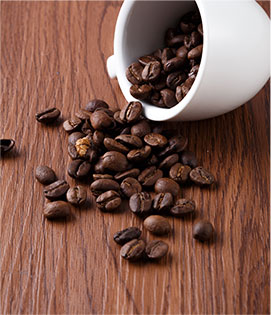
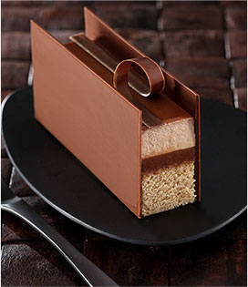

- 
- 
咖啡是世界三大饮料之一，是用经过烘焙的咖啡互制作出来的饮料，与可可、茶同为流行于世界的主要饮品。
咖啡树是属茜草科常乔木，日常饮用的咖啡是用咖啡豆配合各种不同的烹煮器具制作出来的，而咖啡豆就是指咖啡树果实里面的果仁，
再用适当的方法烘焙而成，一杯标准的咖啡品尝起来的味道不应该是苦涩的，一名合格的咖啡师在制作咖啡时会严谨地进行每一步操作，最后为客人呈上的咖啡在味觉上会呈现出不同程度的甜度、酸度、醇厚度或是千净度。
^^^
ABOUT US咖啡是世界三大饮料之一，是用经过烘焙的咖啡豆制作出来的饮料， 与可可、茶同为流行于世界的主要饮品。
咖啡树是属茜草科常乔木，日常饮用的咖啡是用咖啡豆配合各种不同的烹煮器具制作出来的，而咖啡豆就是指咖啡树果实里面的果仁，再用适当的方法烘焙而成，一杯标准的咖啡品尝起来的味道不应该是苦涩的， 一名合格的咖啡师在制作咖啡时会严谨地进行每一步操作，最后为客人呈上的咖啡在味觉上会呈现出不同程度的甜度、酸度、醇厚度或是干净度。
“咖啡”一词源自希腊语“KAWEH”,意思是“力量与热情”。 在世界各地，人们越来越爱喝咖啡。 随之而来的“咖啡文化”充满生活的每个时刻。 无论在家里还是在办公室、或是各种社交场合， 人们都在品着咖啡、它逐渐与时尚、现代生活联系在一起。